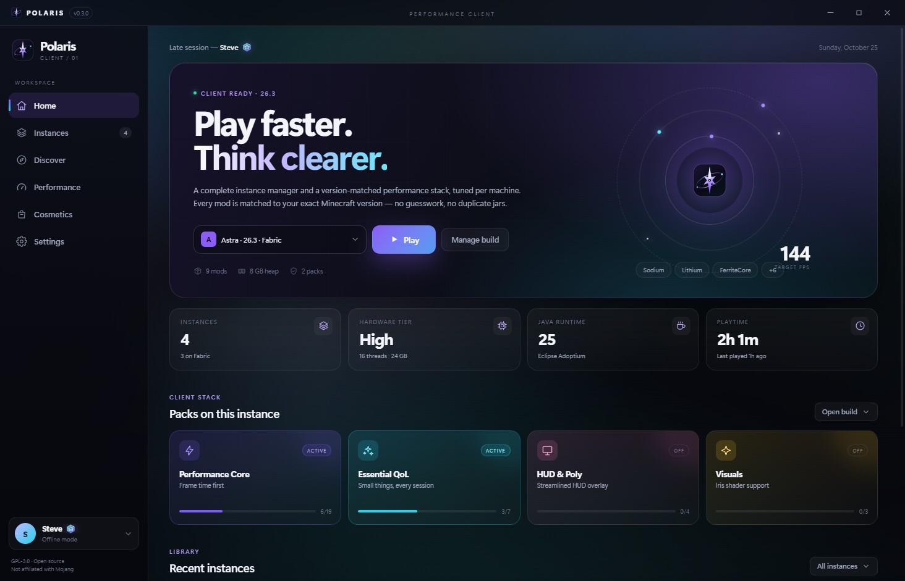
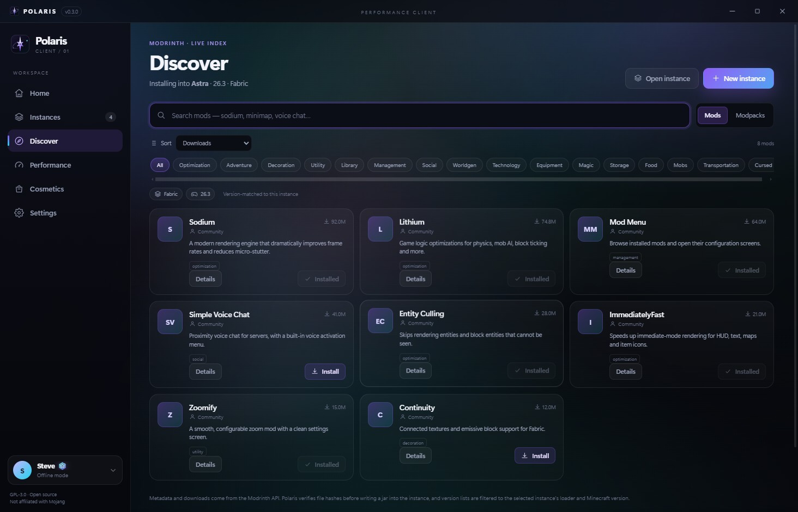
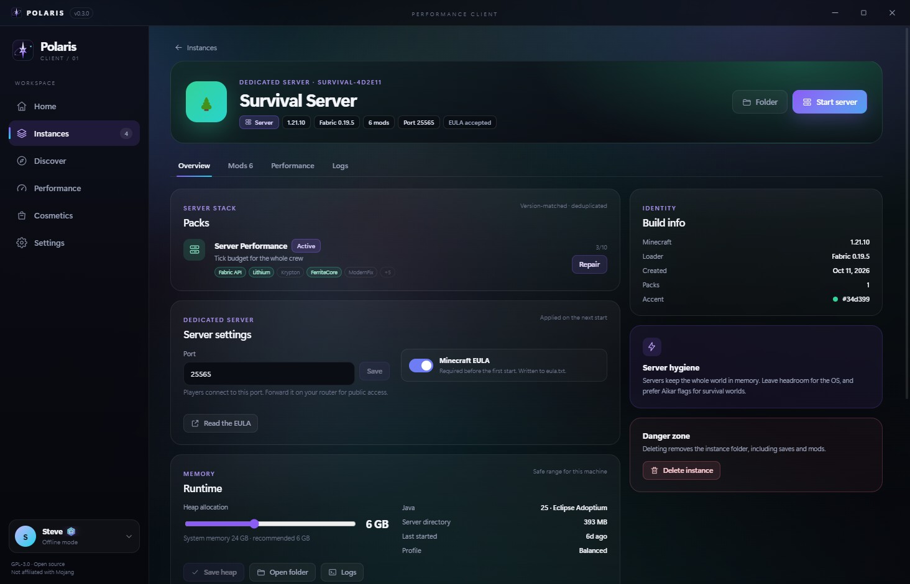
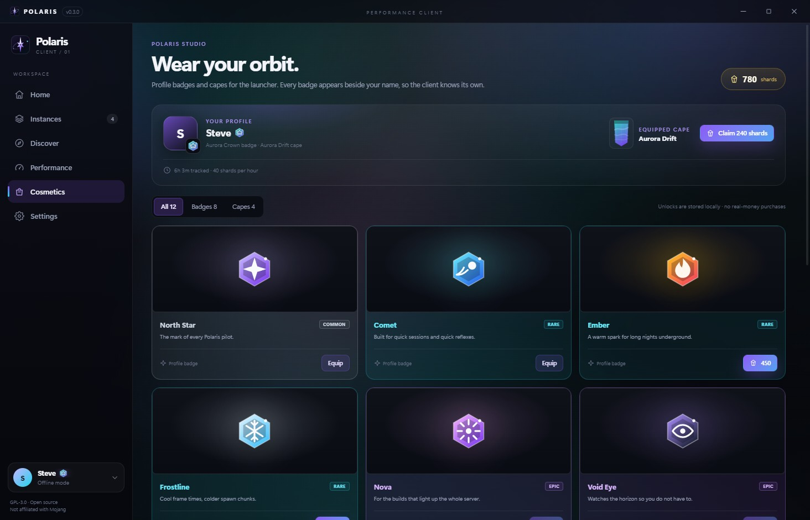
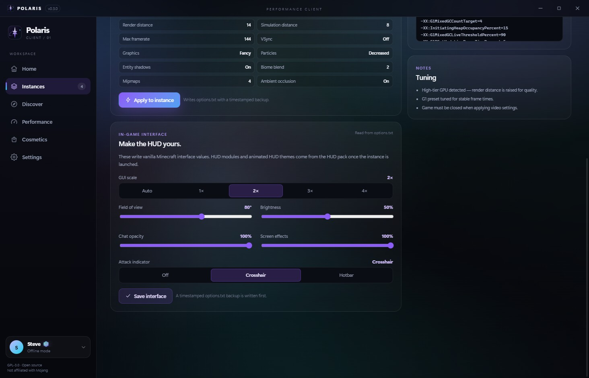

Tier 01
Low
8 GB · integrated or older GPU
3 GB heap
- Render 6–14 chunks
- Frame pacing first
- All three profiles
Polaris is a performance-first Minecraft launcher. It reads your hardware, matches every mod to your exact version, and tunes the game before the first frame — then gets out of the way.

Scanned locally, never uploaded.
Competitive, Balanced, Quality.
Eight badges. Four capes.
Only the requests an install needs.
Most launchers ask how much RAM you have. Polaris also asks what your GPU is, how many threads you have, and which Java you actually installed. Then it writes a plan you can read, edit, and undo.
8 GB · integrated or older GPU
16 GB · mainstream discrete GPU
24 GB · RTX 30 / RX 6000
32 GB+ · RTX 40/50 · RX 7000+
high · balanced
Useful draw distance, a 144 frame cap, and shadows kept for depth perception. The plan that fits most machines.
Every plan writes a timestamped options.txt backup before it
changes a key. The game must be closed.
The render, simulation, graphics, particle, shadow, and FPS values are exactly what Polaris writes for the selected tier and profile. Heap assumes the typical RAM shown for that tier; the launcher sizes it from your actual system RAM. Frame rate still depends on your world, shaders, drivers, and what else is running — this page does not invent benchmark numbers.
Install the game, curate the mods, tune the flags, and start the server from the same place. Polaris is opinionated where defaults are bad and transparent everywhere else.
One local GPU query, thread count, system RAM, and the Java runtimes it can find. Polaris classifies the machine, sizes the heap, and keeps every decision visible.
Tracked jars are pinned by version and sha1. One batch hash request tells Polaris what drifted before it touches anything.
Client and server targets, plus hardware gates. A mod that needs NVIDIA is skipped with a reason instead of quietly breaking the pack.
Create a Fabric server with its own port, mods, EULA gate, and console. Stop it gracefully by writing to stdin; the log streams into the same window.
Aikar G1, low-latency G1, or Generational ZGC. The generational flag only appears on Java 21–22, where it is actually accepted.
Shards, owned cosmetics, and wallpapers live in your local settings. No checkout, no account server, no analytics calls.

Browse Modrinth without opening ten browser tabs. Polaris resolves the exact game version and loader, pulls dependencies, and keeps the gallery, changelog, and every compatible release one click away.
.mrpack installs with overrides, optional files, and a
persisted pack reference.
Mods and modpacks are Fabric-only by design. Unsupported packs are rejected, not half-installed.

A dedicated server is just another instance in the sidebar. Same cards, same mods, same console. No separate launcher, no remote panel you did not ask for.
stop written to
stdin instead of killing the process.
Servers run locally for now. There is no remote panel or multi-user management.
Earn shards by playing. Spend them on badges and capes that sit next to your name in the launcher. No checkout, no loot boxes, no expiry.
Where it works: badges and capes appear on your profile, the account switcher, and the Home hero inside Polaris. Other players seeing them in-game needs a companion relay — that is roadmap, not a shipping claim.

Four animated wallpapers, six accent colors, and a direct link for your own loop. Tune the dim and blur until the text stays readable — then let it pause while Minecraft is running.
Aurora, Nebula, Starfield, and Night Grid. Pure CSS; no video files to install.
Paste a direct HTTPS GIF, WebP, PNG, MP4, or WebM link. Nothing is uploaded.
Dim, blur, and accent presets keep contrast in the foreground.
Animation pauses during a launch and follows your system reduce-motion setting.
Survival Server · 6 mods · 1.21.10
Live CSS preview. The real launcher persists every control and pauses the wallpaper while the game is running.

GUI scale, FOV, brightness, chat opacity and scale, screen effects, and the attack indicator are the settings you actually feel. Tune them in one panel instead of rebuilding the muscle memory every world.
Writes only whitelisted vanilla keys to options.txt — with a
timestamped backup first. Close the game before applying.
No UI mods are injected, and animated in-game wallpapers are not faked. That would need a client mod; Polaris stays vanilla-compatible.
Actual windows, actual data, no staged mockups. Click any shot to open it larger.
Polaris 0.3.0 ships as a per-user Windows installer built from this source. Linux builders can produce an AppImage from the same checkout.
Unsigned NSIS installer · about 78 MB · SHA-256
generated when packaged
Download Polaris-Setup.exe, then run it to install. The NSIS installer is per-user,
so there is no administrator prompt; remove it from Apps & features. SmartScreen
may warn because the build is unsigned. Linux builders: run
npm run dist:linux on Linux or WSL2.
# install once
> npm install
# NSIS on Windows; AppImage on Linux or WSL2
> npm run dist
# explicit targets: npm run dist:win / npm run dist:linuxWhat Polaris does, what it deliberately does not do, and which parts are still roadmap. If a feature needs a server or a mod, the page says so.
Install it or build itNo. Polaris does not inject modules into Minecraft, alter network packets, or ship combat automation. It manages instances, downloads files, writes vanilla options, and launches Fabric when you ask it to. The performance work is standard mods and JVM tuning.
Vanilla launching works across the versions Polaris installs. Mods, curated packs,
and .mrpack imports are Fabric-only. Quilt, Forge, and NeoForge packs
are rejected rather than half-installed. Fabric must support the selected Minecraft
version before a fabric instance can be created.
There is no telemetry and no analytics endpoint. Polaris talks to Mojang, Fabric meta, and Modrinth only when it needs version data, files, or updates. Microsoft sign-in is the device-code flow with an Azure client ID you supply; offline accounts need no network at all.
You start with 900 shards and earn 40 for every tracked hour of playtime. The balance, owned items, and equipped badge and cape are stored in your local settings. There is no checkout and no way to buy shards in this build.
Not yet. Cosmetics show next to your account inside Polaris — on Home, in Settings, and in the account switcher. In-game visibility for other players requires a companion mod or server relay, which is not shipped in 0.3.0. The website and the store label it as roadmap instead of pretending it already works.
Yes, as a local dedicated-server instance. It handles the EULA gate, port, server mods, console, and a graceful stop. It is not a remote panel: there is no multi-user management, scheduled restart, or public hosting service built in.
The flow is implemented, but it needs your own Azure public-client ID. Without one, use an offline account. Polaris never ships or borrows someone else's OAuth client, and unapproved apps can receive a 403 from Minecraft Services.
Download Polaris-Setup.exe from this page and run it. The NSIS installer is per-user and lets you choose a folder, so it does not need administrator rights. If SmartScreen warns because the build is unsigned, verify the SHA-256 shown on this page, then choose More info and Run anyway. Uninstall it from Settings → Apps.
The Windows installer and portable build are produced locally and are not code-signed,
so SmartScreen may warn. The SHA-256 is published in downloads/latest.json; verify the
file with Get-FileHash .\Polaris-Setup.exe -Algorithm SHA256 before running
it. Sign with a certificate you control before distributing it more widely.
Windows 10/11 is the primary target. Linux packaging is available from source:
npm run dist:linux on Linux or WSL2 produces an AppImage, and CI is
configured to build it on Ubuntu. Java and GPU discovery now have Linux paths, but
Linux runtime support is still experimental. macOS is not tested. Server instances
are managed from the same app.